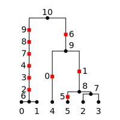
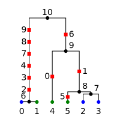

Tutorial¶
Todo
The content here has been ported from the msprime tutorial and needs to be reorganised to make a coherent narrative.
Trees¶
A Tree represents a single tree in a TreeSequence.
The tskit Tree implementation differs from most tree libraries by
using integer IDs to refer to nodes rather than objects. Thus, when we wish to
find the parent of the node with ID ‘0’, we use tree.parent(0), which
returns another integer. If ‘0’ does not have a parent in the current tree
(e.g., if it is a root), then the special value tskit.NULL
(\(-1\)) is returned. The children of a node are found using the
Tree.children() method. To obtain information about a particular node,
one may either use tree.tree_sequence.node(u) to which returns the
corresponding Node instance, or use the Tree.time() or
Tree.population() shorthands.
Traversals¶
Tree traversals in various orders are possible using the Tree.nodes() iterator.
For example, in the following tree we can visit the nodes in different orders:
{kind=link}
for order in ["preorder", "inorder", "postorder"]:
print(f"{order}:\t", list(tree.nodes(order=order)))
preorder: [7, 5, 0, 1, 2, 6, 3, 4]
inorder: [0, 5, 1, 2, 7, 3, 6, 4]
postorder: [0, 1, 2, 5, 3, 4, 6, 7]
Much of the time, the specific ordering of the nodes is not important and we can leave it out (defaulting to preorder traversal). For example, here we compute the total branch length of a tree:
total_branch_length = sum(tree.branch_length(u) for u in tree.nodes())
This is also available as the tskit.Tree.total_branch_length attribute.
Traversing upwards¶
For many applications it is useful to be able to traverse upwards from the
leaves. We can do this using the Tree.parent() method, which
returns the parent of a node. For example, we can traverse upwards from
each of the samples in the tree:
for u in tree.samples():
path = []
v = u
while v != tskit.NULL:
path.append(v)
v = tree.parent(v)
print(u, "->", path)
giving:
0 -> [0, 5, 7]
1 -> [1, 5, 7]
2 -> [2, 5, 7]
3 -> [3, 6, 7]
4 -> [4, 6, 7]
Traversals with information¶
Sometimes we will need to traverse down the tree while maintaining some information about the nodes that are above it. While this can be done using recursive algorithms, it is often more convenient and efficient to use an iterative approach. Here, for example, we define an iterator that yields all nodes in preorder along with their path length to root:
def preorder_dist(tree):
for root in tree.roots:
stack = [(root, 0)]
while len(stack) > 0:
u, distance = stack.pop()
yield u, distance
for v in tree.children(u):
stack.append((v, distance + 1))
print(list(preorder_dist(tree)))
Running this on the example above gives us:
[(7, 0), (6, 1), (4, 2), (3, 2), (5, 1), (2, 2), (1, 2), (0, 2)]
Traversals with networkx¶
Traversals and other network analysis can also be performed using the sizeable
networkx
library. This can be achieved by calling Tree.as_dict_of_dicts() to
convert a Tree instance to a format that can be imported by networkx to
create a graph:
import networkx as nx
g = nx.DiGraph(tree.as_dict_of_dicts())
print(sorted(g.edges))
[(5, 0), (5, 1), (5, 2), (6, 3), (6, 4), (7, 5), (7, 6)]
Traversing upwards¶
We can revisit the above examples and traverse upwards with networkx using a depth-first search algorithm:
import networkx as nx
g = nx.DiGraph(tree.as_dict_of_dicts())
for u in tree.samples():
path = [u] + [parent for parent, child, _ in
nx.edge_dfs(g, source=u, orientation="reverse")]
print(u, "->", path)
giving:
0 -> [0, 5, 7]
1 -> [1, 5, 7]
2 -> [2, 5, 7]
3 -> [3, 6, 7]
4 -> [4, 6, 7]
Calculating distances to the root¶
Similarly, we can yield the nodes of a tree along with their distance to the root in pre-order in networkx as well:
import networkx as nx
g = nx.DiGraph(tree.as_dict_of_dicts())
for root in tree.roots:
print(nx.shortest_path_length(g, source=root).items())
Running this on the example above gives us the same result as before:
[(7, 0), (6, 1), (4, 2), (3, 2), (5, 1), (2, 2), (1, 2), (0, 2)]
Finding nearest neighbors¶
If some samples in a tree are not at time 0, then finding the nearest neighbor of a sample is a bit more involved. Instead of writing our own traversal code we can again draw on a networkx algorithm. Let us start with an example tree with three samples that were sampled at different time points:
{kind=link}
The generation times for these nodes are:
for u in tree.nodes():
print(u, tree.time(u))
giving:
4 20.005398778263334
2 20.0
3 17.833492457579652
0 0.0
1 1.0
Note that samples 0 and 1 are about 35 generations apart from each other even though they were sampled at almost the same time. This is why samples 0 and 1 are closer to sample 2 than to each other.
For this nearest neighbor search we will be traversing up and down the tree, so it is easier to treat the tree as an undirected graph:
g = nx.Graph(tree.as_dict_of_dicts())
When converting the tree to a networkx graph the edges are annotated with their branch length:
print(g.edges(data=True))
giving:
[(4, 2, {'branch_length': 0.005398778263334236}),
(4, 3, {'branch_length': 2.171906320683682}),
(3, 0, {'branch_length': 17.833492457579652}),
(3, 1, {'branch_length': 16.833492457579652})]
We can now use the “branch_length” field as a weight for a weighted shortest path search:
# a dictionary of dictionaries to represent our distance matrix
dist_dod = collections.defaultdict(dict)
for source, target in itertools.combinations(tree.samples(), 2):
dist_dod[source][target] = nx.shortest_path_length(
g, source=source, target=target, weight="branch_length"
)
dist_dod[target][source] = dist_dod[source][target]
# extract the nearest neighbor of nodes 0, 1, and 2
nearest_neighbor_of = [min(dist_dod[u], key=dist_dod[u].get) for u in range(3)]
print(dict(zip(range(3), nearest_neighbor_of)))
gives:
{0: 2, 1: 2, 2: 1}
Moving along a tree sequence¶
Most of the time we will want to iterate over all the trees in a tree sequence
sequentially as efficiently as possible. The simplest way to do this is to
use the TreeSequence.trees() method:
import msprime
ts = msprime.simulate(5, recombination_rate=1, random_seed=42)
print("Tree sequence has {} trees".format(ts.num_trees))
print()
for tree in ts.trees():
print(
"Tree {} covers [{:.2f}, {:.2f}); TMRCA = {:.4f}".format(
tree.index, *tree.interval, tree.time(tree.root)
)
)
Running the code, we get:
Tree sequence has 7 trees
Tree 0 covers [0.00, 0.08); TMRCA = 4.2542
Tree 1 covers [0.08, 0.27); TMRCA = 2.5973
Tree 2 covers [0.27, 0.37); TMRCA = 4.2542
Tree 3 covers [0.37, 0.66); TMRCA = 2.5973
Tree 4 covers [0.66, 0.71); TMRCA = 4.2542
Tree 5 covers [0.71, 0.75); TMRCA = 2.5973
Tree 6 covers [0.75, 1.00); TMRCA = 2.5973
Here we run a small simulation using msprime
which results in 7 distinct trees along a genome of length 1. We then iterate
over these trees sequentially using the TreeSequence.trees() method,
and print out each tree’s index, the interval over which the tree applies
and the time of the most recent common ancestor of all the samples. This
method is very efficient, and allows us to quickly iterate over very large
tree sequences.
We can also efficiently iterate over the trees backwards, using Python’s
reversed() function:
for tree in reversed(ts.trees()):
print(
"Tree {} covers [{:.2f}, {:.2f}); TMRCA = {:.4f}".format(
tree.index, *tree.interval, tree.time(tree.root)
)
)
giving:
Tree 6 covers [0.75, 1.00); TMRCA = 2.5973
Tree 5 covers [0.71, 0.75); TMRCA = 2.5973
Tree 4 covers [0.66, 0.71); TMRCA = 4.2542
Tree 3 covers [0.37, 0.66); TMRCA = 2.5973
Tree 2 covers [0.27, 0.37); TMRCA = 4.2542
Tree 1 covers [0.08, 0.27); TMRCA = 2.5973
Tree 0 covers [0.00, 0.08); TMRCA = 4.2542
One of the reasons that the trees iterator allows us to access
the trees in a tree sequence so efficiently is because we use the
same underlying instance of the .Tree class each time. That is,
each time the iterator returns a value, it is actually the same tree
instance each time which has been updated internally to reflect the
(usually small) changes in the tree along the sequence. As a
result of this, if we store the results of the tree iterator in a
list, we will get unexpected results:
for tree in list(ts.trees()):
print(
"Tree {} covers [{:.2f}, {:.2f}): id={:x}".format(
tree.index, *tree.interval, id(tree)
)
)
Tree -1 covers [0.00, 0.00): id=7f290becb3c8
Tree -1 covers [0.00, 0.00): id=7f290becb3c8
Tree -1 covers [0.00, 0.00): id=7f290becb3c8
Tree -1 covers [0.00, 0.00): id=7f290becb3c8
Tree -1 covers [0.00, 0.00): id=7f290becb3c8
Tree -1 covers [0.00, 0.00): id=7f290becb3c8
Tree -1 covers [0.00, 0.00): id=7f290becb3c8
We have stored seven copies of the same Tree instance in the
list. Because iteration has ended, this tree is in the “null” state (see
below for more details) which means that it doesn’t represent any of the
trees in the tree sequence.
If we do wish to obtain a list of the trees, we can do so by using the
TreeSequence.aslist() method:
for tree in ts.aslist():
print(
"Tree {} covers [{:.2f}, {:.2f}): id={:x}".format(
tree.index, *tree.interval, id(tree)
)
)
Tree 0 covers [0.00, 0.08): id=7fd2c50a40f0
Tree 1 covers [0.08, 0.27): id=7fd2b2aca6d8
Tree 2 covers [0.27, 0.37): id=7fd2b2adde10
Tree 3 covers [0.37, 0.66): id=7fd2b2adddd8
Tree 4 covers [0.66, 0.71): id=7fd2b2addd68
Tree 5 covers [0.71, 0.75): id=7fd2b2addcf8
Tree 6 covers [0.75, 1.00): id=7fd2b2addeb8
Note that we now have a different object for each tree in the list. Please
note that this is much less efficient than iterating over the trees
using the TreeSequence.trees() method (and uses far more memory!),
and should only be used as a convenience when working with small trees.
We can also obtain specific trees along the sequence, using the
TreeSequence.first(),
TreeSequence.last()
TreeSequence.at() and
TreeSequence.at_index() methods. The first() and last()
methods return the first and last trees in the sequence, as might be
imagined. The at() method returns the tree that covers a
given genomic location, and the at_index() method returns the
tree at a given index along the sequence:
tree = ts.at(0.5)
print(
"Tree {} covers [{:.2f}, {:.2f}): id={:x}".format(
tree.index, *tree.interval, id(tree)
)
)
tree = ts.at_index(0)
print(
"Tree {} covers [{:.2f}, {:.2f}): id={:x}".format(
tree.index, *tree.interval, id(tree)
)
)
tree = ts.at_index(-1)
print(
"Tree {} covers [{:.2f}, {:.2f}): id={:x}".format(
tree.index, *tree.interval, id(tree)
)
)
Tree 3 covers [0.37, 0.66): id=7f9fdb469630
Tree 0 covers [0.00, 0.08): id=7f9fdb46d160
Tree 6 covers [0.75, 1.00): id=7f9fdb469630
Note that each call to these methods returns a different Tree instance
and so it is much, much less efficient to sequentially access trees
by their index values than it is to use the TreeSequence.trees()
iterator.
Editing tree sequences¶
Sometimes we wish to make some minor modifications to a tree sequence that has been generated by a simulation. However, tree sequence objects are immutable and so we cannot edit them in place. To modify a tree sequence, we need to extract the underlying tables of information, edit these tables, and then create a new tree sequence from them. These tables succinctly store everything we need to know about a tree sequence, and can be manipulated using the Tables and Table Collections. In the following example, we use this approach to remove all singleton sites from a given tree sequence.
def strip_singletons(ts):
tables = ts.dump_tables()
tables.sites.clear()
tables.mutations.clear()
for tree in ts.trees():
for site in tree.sites():
assert len(site.mutations) == 1 # Only supports infinite sites muts.
mut = site.mutations[0]
if tree.num_samples(mut.node) > 1:
site_id = tables.sites.add_row(
position=site.position, ancestral_state=site.ancestral_state
)
tables.mutations.add_row(
site=site_id, node=mut.node, derived_state=mut.derived_state
)
return tables.tree_sequence()
This function takes a tree sequence containing some infinite sites mutations as
input, and returns a copy in which all singleton sites have been removed.
The approach is very simple: we get a copy of the underlying
table data in a TableCollection object, and first clear the
site and mutation tables. We then consider each site in turn,
and if the number of samples with
the mutation is greater than one, we add the site and mutation to our
output tables using SiteTable.add_row() and MutationTable.add_row().
(In this case we consider only simple infinite sites mutations,
where we cannot have back or recurrent mutations. These would require a slightly
more involved approach where we keep a map of mutation IDs so that
mutation parent values could be computed. We have also omitted the
site and mutation metadata in the interest of simplicity.)
After considering each site, we then create a new tree sequence using
the TableCollection.tree_sequence() method on our updated tables.
Using this function then, we get:
>>> ts = msprime.simulate(10, mutation_rate=10)
>>> ts.num_sites
50
>>> ts_new = strip_singletons(ts)
>>> ts_new.num_sites
44
>>>
Thus, we have removed 6 singleton sites from the tree sequence.
Todo
Add another example here where we use the array oriented API to edit the nodes and edges of a tree sequence. Perhaps decapitating would be a good example?
Working with Tables¶
Tables provide a convenient method for viewing, importing and exporting tree
sequences, and are closely tied to the underlying data structures.
There are eight tables that together define a tree sequence,
although some may be empty,
and together they form a TableCollection.
The tables are defined in Table Definitions,
and the Tables API section describes how to work with them.
Here we make some general remarks about what you can and cannot do with them.
tskit provides direct access to the columns of each table as
numpy arrays: for instance, if n is a NodeTable, then n.time
will return an array containing the birth times of the individuals whose genomes
are represented by the nodes in the table.
However, it is important to note that this is not a shallow copy:
modifying n.time will not change the node table n. This may change in
the future, but currently there are three ways to modify tables: .add_row(),
.set_columns(), and .append_columns()
(and also .clear(), which empties the table).
For example, a node table could be constructed using .add_row() as
follows:
n = tskit.NodeTable()
sv = [True, True, True, False, False, False, False]
tv = [0.0, 0.0, 0.0, 0.4, 0.5, 0.7, 1.0]
pv = [0, 0, 0, 0, 0, 0, 0]
for s, t, p in zip(sv, tv, pv):
n.add_row(flags=s, population=p, time=t)
obtaining:
>>> print(n)
id flags population individual time metadata
0 1 0 -1 0.0
1 1 0 -1 0.0
2 1 0 -1 0.0
3 0 0 -1 0.4
4 0 0 -1 0.5
5 0 0 -1 0.7
6 0 0 -1 1.0
The .add_row() method is natural (and should be reasonably efficient) if
new records appear one-by-one. In the example above it would have been more
natural to use .set_columns() — equivalently:
n = tskit.NodeTable()
n.set_columns(flags=sv, population=pv, time=tv)
Since columns cannot be modified directly as properties of the tables,
they must be extracted, modified, then replaced.
For example, here we add 1.4 to every time except the first
in the node table constructed above (using numpy indexing):
tn = n.time
tn[1:] = tn[1:] + 1.4
n.set_columns(flags=n.flags, population=n.population, time=tn)
The result is:
>>> print(n)
id flags population individual time metadata
0 1 0 -1 0.0
1 1 0 -1 1.4
2 1 0 -1 1.4
3 0 0 -1 1.8
4 0 0 -1 1.9
5 0 0 -1 2.1
6 0 0 -1 2.4
Overview of the Tables Format¶
The Table Definitions section gives a precise definition of how a tree sequence is stored in a collection of tables. Here we give an overview. Consider the following sequence of trees:
time ago
--------
1.0 6
┏━┻━━┓
┃ ┃
0.7 ┃ ╋ 5
┃ ┃ ┏━┻━┓
0.5 ┃ 4 4 ┃ 4
┃ ┏━┻━┓ ┏━┻━┓ ┃ ┏━┻━┓
┃ ┃ ┃ ┃ ╋ ┃ ┃ ┃
0.4 ┃ ┃ ┃ ┃ 3 ┃ ┃ ┃
┃ ┃ ┃ ┃ ┏━┻━┓ ┃ ┃ ┃
┃ ┃ ┃ ┃ ┃ ╋ ┃ ┃ ┃
0.0 0 1 2 1 0 2 0 1 2
position 0.0 0.2 0.8 1.0
Ancestral recombination events have produced three different trees
that relate the three sampled genomes 0, 1, and 2 to each other
along the chromosome of length 1.0.
Each node in each of the above trees represents a particular ancestral genome
(a haploid genome; diploid individuals would be represented by two nodes).
We record when each of nodes lived in a NodeTable:
NodeTable:
id flags population time
0 1 0 0
1 1 0 0
2 1 0 0
3 0 0 0.4
4 0 0 0.5
5 0 0 0.7
6 0 0 1.0
Importantly, the first column, id, is not actually recorded, and is
only shown when printing out node tables (as here) for convenience.
The second column, flags records a 1 for the individuals that are samples,
i.e., whose entire genealogical history is recorded by these trees.
(Note that the trees above record that node 3 inherited from node 4
on the middle portion of the genome, but not on the ends.)
We next need to record each tree’s edges. Since some edges are present
in more than one tree (e.g., node 1 inherits from node 4 across
the entire sequence), we record in the EdgeTable each edge
and the genomic region for which it appears in the trees:
EdgeTable:
left right parent children
0.2 0.8 3 0
0.2 0.8 3 2
0.0 1.0 4 1
0.0 0.2 4 2
0.8 1.0 4 2
0.2 0.8 4 3
0.8 1.0 5 0
0.8 1.0 5 4
0.0 0.2 6 0
0.0 0.2 6 4
Since node 3 is most recent, the edge that says that nodes 0 and 2 inherit from node 3 on the interval between 0.2 and 0.8 comes first. Next are the edges from node 4: there are four of these, as the edge from node 4 to node 1 is shared across the entire sequence, and for each of the three genomic intervals there is an additional child node. At this point, we know the full tree on the middle interval. Finally, edges specifying the common ancestor of 0 and 4 on the remaining intervals (parents 6 and 5 respectively) allow us to construct all trees across the entire interval.
There are three mutations in the depiction above,
marked by ╋: one above node 4 on the first tree,
and the other two above nodes 2 and 3 on the second tree.
Suppose that the first mutation occurs at position 0.1 and the mutations in the
second tree both occurred at the same position, at 0.5 (with a back mutation).
To record the inheritance patterns of these, we need only record
the positions on the genome at which they occurred,
and on which edge (equivalently, above which node) they occurred.
The positions are recorded in the SiteTable:
SiteTable:
id position ancestral_state
0 0.1 0
1 0.5 0
As with node tables, the id column is not actually recorded, but is
implied by the position in the table. The results of the
actual mutations are then recorded:
MutationTable:
site node derived_state
0 4 1
1 3 1
1 2 0
This would then result in the following (two-locus) haplotypes for the three samples:
sample haplotype
------ ---------
0 01
1 10
2 10
To create these tables, and the corresponding tree sequence, we would
create a TableCollection, and then use its
TableCollection.tree_sequence() method:
tables = tskit.TableCollection(sequence_length=1.0)
# Nodes
sv = [True, True, True, False, False, False, False]
tv = [0.0, 0.0, 0.0, 0.4, 0.5, 0.7, 1.0]
for is_sample, t in zip(sv, tv):
flags = tskit.NODE_IS_SAMPLE if is_sample else 0
tables.nodes.add_row(flags=flags, time=t)
# Edges
lv = [0.2, 0.2, 0.0, 0.0, 0.8, 0.2, 0.8, 0.8, 0.0, 0.0]
rv = [0.8, 0.8, 1.0, 0.2, 1.0, 0.8, 1.0, 1.0, 0.2, 0.2]
pv = [3, 3, 4, 4, 4, 4, 5, 5, 6, 6]
cv = [0, 2, 1, 2, 2, 3, 0, 4, 0, 4]
for l, r, p, c in zip(lv, rv, pv, cv):
tables.edges.add_row(left=l, right=r, parent=p, child=c)
# Sites
for p, a in zip([0.1, 0.5], ['0', '0']):
tables.sites.add_row(position=p, ancestral_state=a)
# Mutations
for s, n, d in zip([0, 1, 1], [4, 3, 2], ['1', '1', '0']):
tables.mutations.add_row(site=s, node=n, derived_state=d)
We can then finally obtain the tree sequence:
ts = tables.tree_sequence()
for t in ts.trees():
print(t.draw(format='unicode'))
6
┏━┻┓
┃ 4
┃ ┏┻┓
0 1 2
4
┏━┻┓
┃ 3
┃ ┏┻┓
1 0 2
5
┏━┻┓
┃ 4
┃ ┏┻┓
0 1 2
Working with Metadata¶
Metadata is information associated with entities that tskit doesn’t use or interpret,
but which is useful to pass on to downstream analysis such as sample ids, dates etc. See
Metadata for a full discussion. Each table has a
tskit.MetadataSchema accessed as table.metadata_schema. which details the
contents and encoding of the metadata for each row. A metadata schema is a JSON document
that conforms to JSON Schema
(The full schema for tskit is at Full metaschema).
Reading metadata and schemas¶
Metadata is automatically decoded using the schema when accessed via a
TreeSequence or TableCollection Python API. For example:
>>> ts.individual(0).metadata
{'accession': 'ERS0001', 'pcr': True}
>>> ts.tables.individuals[0].metadata
{'accession': 'ERS0001', 'pcr': True}
Viewing the tskit.MetadataSchema for a table can help with understanding
its metadata as it can contain descriptions and constraints:
>>> pprint.pprint(ts.table_metadata_schemas.individual)
{'additionalProperties': False,
'codec': 'json',
'properties': {'accession': {'description': 'ENA accession number',
'type': 'string'},
'pcr': {'description': 'Was PCR used on this sample',
'name': 'PCR Used',
'type': 'boolean'}},
'required': ['accession', 'pcr'],
'type': 'object'}
>>> pprint.pprint(ts.tables.individuals.metadata_schema)
(.... as above)
The top-level metadata and schemas for the entire tree sequence is similarly
accessed with ts.metadata and ts.metadata_schema.
If there is no schema (i.e. it is equal to MetadataSchema(None)) for a table
or top-level metadata, then no decoding is performed and bytes will be returned.
Modifying metadata and schemas¶
If you are creating or modifying a tree sequence you may want to record or add to the metadata. When doing so the schema must be modified first, as it is then used to validate and encode the metadata.
Schemas in tskit are held in a tskit.MetadataSchema.
A Python dict representation of the schema is passed to its constructor, which
will validate the schema:
schema = tskit.MetadataSchema({"codec": "json" ...... })
This tskit.MetadataSchema can then be assigned to a table or the top-level
tree sequence e.g.
metadata_schema:
tables = tskit.TableCollection(sequence_length=1)
tables.individuals.metadata_schema = schema
This will overwrite any existing schema. Note that this will not validate any existing
metadata against the new schema. Now that the table has a schema calls to
add_row will validate and encode the metadata:
tables.individuals.add_row(0, metadata={"accession": "Bob1234", "pcr": True})
and if we try to add metadata that doesn’t fit the schema, such as accidentally using a string instead of a proper Python boolean, we’ll get an error:
tables.individuals.add_row(0, metadata={"accession": "Bob1234", "pcr": "false"})
Traceback (most recent call last):
File "/home/benj/projects/tskit/python/tskit/metadata.py", line 181, in validate_and_encode_row
self._validate_row(row)
File "/home/benj/projects/tskit/env/lib/python3.8/site-packages/jsonschema/validators.py", line 353, in validate
raise error
jsonschema.exceptions.ValidationError: 'false' is not of type 'boolean'
Failed validating 'type' in schema['properties']['pcr']:
{'description': 'Was PCR used on this sample',
'name': 'PCR Used',
'type': 'boolean'}
On instance['pcr']:
'false'
The above exception was the direct cause of the following exception:
Traceback (most recent call last):
File "<stdin>", line 1, in <module>
File "/home/benj/projects/tskit/python/tskit/tables.py", line 409, in add_row
metadata = self.metadata_schema.validate_and_encode_row(metadata)
File "/home/benj/projects/tskit/python/tskit/metadata.py", line 183, in validate_and_encode_row
raise exceptions.MetadataValidationError from ve
tskit.exceptions.MetadataValidationError
To set the top-level metadata, just assign it. Validation and encoding happen as specified by the top-level metadata schema (Note that provenance info should go in Provenance not metadata):
tables.metadata = {"mean_coverage": 200.5}
To modify a schema, for example to add a key; first get the dict representation, modify then write back:
schema_dict = tables.individuals.metadata_schema.schema
schema_dict["properties"]["newKey"] = {"type": "integer"}
tables.individuals.metadata_schema = tskit.MetadataSchema(schema_dict)
To modify the metadata of rows in tables use the Metadata for bulk table methods.
Viewing raw metadata¶
If you need to see the raw (i.e., bytes) metadata, you just need to remove the schema, for instance:
tables.individuals.add_row(metadata={'accession': 'abc123', 'newKey':25}})
tables.individuals[0].metadata
# {'accession': 'abc123', 'newKey': '25'}
tables.individuals.MetadataSchema = tskit.MetadataSchema(None)
tables.individuals[0].metadata
# b'abc123\x00\x00\x19'
Metadata for bulk table methods¶
In the interests of efficiency each table’s
packset_metadata method, as well as the more
general set_columns and
append_columns do not attempt to validate or
encode metadata. You can call
MetadataSchema.validate_and_encode_row
directly to prepare metadata for these methods:
metadata_column = [
{"accession": "etho1234", "pcr": True},
{"accession": "richard1235", "pcr": False},
{"accession": "albert1236", "pcr": True},
]
encoded_metadata_column = [
table.metadata_schema.validate_and_encode_row(r) for r in metadata_column
]
metadata, metadata_offset = tskit.pack_bytes(encoded_metadata_column)
table.set_columns(flags=[0, 0, 0], metadata=metadata, metadata_offset=metadata_offset)
Or if all columns do not need to be set:
table.packset_metadata(
[table.metadata_schema.validate_and_encode_row(r) for r in metadata_column]
)
Binary metadata¶
To disable the validation and encoding of metadata and store raw bytes pass None to
tskit.MetadataSchema
table.metadata_schema = tskit.MetadataSchema(None)
table.add_row(0, metadata=b"SOME CUSTOM BYTES #!@")
t[0].metadata
b'SOME CUSTOM BYTES #!@'
Calculating LD¶
The tskit API provides methods to efficiently calculate
population genetics statistics. For example, the LdCalculator
class allows us to compute pairwise linkage disequilibrium coefficients.
Here we use the LdCalculator.r2_matrix() method to easily make an
LD plot using matplotlib. (Thanks to
the excellent scikit-allel
for the basic plotting code
used here.)
import msprime
import tskit
import matplotlib.pyplot as pyplot
def ld_matrix_example():
ts = msprime.simulate(100, recombination_rate=10, mutation_rate=20, random_seed=1)
ld_calc = tskit.LdCalculator(ts)
A = ld_calc.r2_matrix()
# Now plot this matrix.
x = A.shape[0] / pyplot.rcParams["figure.dpi"]
x = max(x, pyplot.rcParams["figure.figsize"][0])
fig, ax = pyplot.subplots(figsize=(x, x))
fig.tight_layout(pad=0)
im = ax.imshow(A, interpolation="none", vmin=0, vmax=1, cmap="Blues")
ax.set_xticks([])
ax.set_yticks([])
for s in "top", "bottom", "left", "right":
ax.spines[s].set_visible(False)
pyplot.gcf().colorbar(im, shrink=0.5, pad=0)
pyplot.savefig("ld.svg")
{kind=link}
Working with threads¶
When performing large calculations it’s often useful to split the
work over multiple processes or threads. The tskit API can
be used without issues across multiple processes, and the Python
multiprocessing module often provides a very effective way to
work with many replicate simulations in parallel.
When we wish to work with a single very large dataset, however, threads can
offer better resource usage because of the shared memory space. The Python
threading library gives a very simple interface to lightweight CPU
threads and allows us to perform several CPU intensive tasks in parallel. The
tskit API is designed to allow multiple threads to work in parallel when
CPU intensive tasks are being undertaken.
Note
In the CPython implementation the Global Interpreter Lock ensures that
only one thread executes Python bytecode at one time. This means that
Python code does not parallelise well across threads, but avoids a large
number of nasty pitfalls associated with multiple threads updating
data structures in parallel. Native C extensions like numpy and tskit
release the GIL while expensive tasks are being performed, therefore
allowing these calculations to proceed in parallel.
In the following example we wish to find all mutations that are in approximate
LD (\(r^2 \geq 0.5\)) with a given set of mutations. We parallelise this
by splitting the input array between a number of threads, and use the
LdCalculator.r2_array() method to compute the \(r^2\) value
both up and downstream of each focal mutation, filter out those that
exceed our threshold, and store the results in a dictionary. We also
use the very cool tqdm module to give us a
progress bar on this computation.
import threading
import numpy as np
import tqdm
import msprime
import tskit
def find_ld_sites(
tree_sequence, focal_mutations, max_distance=1e6, r2_threshold=0.5, num_threads=8
):
results = {}
progress_bar = tqdm.tqdm(total=len(focal_mutations))
num_threads = min(num_threads, len(focal_mutations))
def thread_worker(thread_index):
ld_calc = tskit.LdCalculator(tree_sequence)
chunk_size = int(math.ceil(len(focal_mutations) / num_threads))
start = thread_index * chunk_size
for focal_mutation in focal_mutations[start : start + chunk_size]:
a = ld_calc.r2_array(
focal_mutation, max_distance=max_distance, direction=tskit.REVERSE
)
rev_indexes = focal_mutation - np.nonzero(a >= r2_threshold)[0] - 1
a = ld_calc.r2_array(
focal_mutation, max_distance=max_distance, direction=tskit.FORWARD
)
fwd_indexes = focal_mutation + np.nonzero(a >= r2_threshold)[0] + 1
indexes = np.concatenate((rev_indexes[::-1], fwd_indexes))
results[focal_mutation] = indexes
progress_bar.update()
threads = [
threading.Thread(target=thread_worker, args=(j,)) for j in range(num_threads)
]
for t in threads:
t.start()
for t in threads:
t.join()
progress_bar.close()
return results
def threads_example():
ts = msprime.simulate(
sample_size=1000,
Ne=1e4,
length=1e7,
recombination_rate=2e-8,
mutation_rate=2e-8,
)
counts = np.zeros(ts.num_sites)
for tree in ts.trees():
for site in tree.sites():
assert len(site.mutations) == 1
mutation = site.mutations[0]
counts[site.id] = tree.num_samples(mutation.node)
doubletons = np.nonzero(counts == 2)[0]
results = find_ld_sites(ts, doubletons, num_threads=8)
print("Found LD sites for", len(results), "doubleton sites out of", ts.num_sites)
In this example, we first simulate 1000 samples of 10 megabases and find all
doubleton mutations in the resulting tree sequence. We then call the
find_ld_sites() function to find all mutations that are within 1 megabase
of these doubletons and have an \(r^2\) statistic of greater than 0.5.
The find_ld_sites() function performs these calculations in parallel using
8 threads. The real work is done in the nested thread_worker() function,
which is called once by each thread. In the thread worker, we first allocate an
instance of the LdCalculator class. (It is critically important
that each thread has its own instance of LdCalculator, as the threads
will not work efficiently otherwise.) After this, each thread works out the
slice of the input array that it is responsible for, and then iterates over
each focal mutation in turn. After the \(r^2\) values have been calculated,
we then find the indexes of the mutations corresponding to values greater than
0.5 using numpy.nonzero(). Finally, the thread stores the resulting array
of mutation indexes in the results dictionary, and moves on to the next
focal mutation.
Running this example we get:
>>> threads_example()
100%|████████████████████████████████████████████████| 4045/4045 [00:09<00:00, 440.29it/s]
Found LD sites for 4045 doubleton mutations out of 60100
Parsimony¶
The Tree.map_mutations() method finds a parsimonious explanation for a
set of discrete character observations on the samples in a tree using classical phylogenetic
algorithms.
tree = msprime.simulate(6, random_seed=42).first()
alleles = ["red", "blue", "green"]
genotypes = [0, 0, 0, 0, 1, 2]
node_colours = {j: alleles[g] for j, g in enumerate(genotypes)}
ancestral_state, mutations = tree.map_mutations(genotypes, alleles)
print("Ancestral state = ", ancestral_state)
for mut in mutations:
print(f"Mutation: node = {mut.node} derived_state = {mut.derived_state}")
tree.draw("_static/parsimony1.svg", node_colours=node_colours)
We get:
Ancestral state = red
Mutation: node = 5 derived_state = green
Mutation: node = 4 derived_state = blue
So, the algorithm has concluded, quite reasonably, that the most parsimonious description of this state is that the ancestral state is red and there was a mutation to blue and green over nodes 4 and 5.
Building tables¶
One of the main uses of Tree.map_mutations() is to position mutations on a tree
to encode observed data. In the following example we show how a set
of tables can be updated using the Tables API; here we
infer the location of mutations in an simulated tree sequence, and recompute
the node and edge tables exactly:
ts = msprime.simulate(6, random_seed=23)
ts = msprime.mutate(
ts, rate=3, model=msprime.InfiniteSites(msprime.NUCLEOTIDES), random_seed=2)
tree = ts.first()
tables = ts.dump_tables()
# Reinfer the sites and mutations from the variants.
tables.sites.clear()
tables.mutations.clear()
for var in ts.variants():
ancestral_state, mutations = tree.map_mutations(var.genotypes, var.alleles)
tables.sites.add_row(var.site.position, ancestral_state=ancestral_state)
parent_offset = len(tables.mutations)
for mutation in mutations:
parent = mutation.parent
if parent != tskit.NULL:
parent += parent_offset
tables.mutations.add_row(
var.index, node=mutation.node, parent=parent,
derived_state=mutation.derived_state)
assert tables.sites == ts.tables.sites
assert tables.mutations == ts.tables.mutations
print(tables.sites)
print(tables.mutations)
The output is:
id position ancestral_state metadata
0 0.25849808 T
1 0.26682728 G
2 0.32053644 C
3 0.40730783 T
4 0.49856117 G
5 0.58679698 A
6 0.61927097 A
7 0.71975423 T
8 0.94773061 C
id site node derived_state parent metadata
0 0 8 C -1
1 1 7 C -1
2 2 4 A -1
3 3 9 C -1
4 4 8 A -1
5 5 8 T -1
6 6 5 G -1
7 7 8 A -1
8 8 3 T -1
Missing data¶
The Fitch parsimony algorithm in Tree.map_mutations() can also take missing data
into account when finding a set of parsimonious state transitions. We do this by
specifying the special value -1 as the state, which is treated by the algorithm as
“could be anything”.
For example, here we state that sample 0 is missing, and use the colour white to indicate this:
tree = msprime.simulate(6, random_seed=42).first()
alleles = ["red", "blue", "green", "white"]
genotypes = [-1, 0, 0, 0, 1, 2]
node_colours = {j: alleles[g] for j, g in enumerate(genotypes)}
ancestral_state, mutations = tree.map_mutations(genotypes, alleles)
print("Ancestral state = ", ancestral_state)
for mut in mutations:
print(f"Mutation: node = {mut.node} derived_state = {mut.derived_state}")
tree.draw("_static/parsimony2.svg", node_colours=node_colours)
As before, we get:
Ancestral state = red
Mutation: node = 5 derived_state = green
Mutation: node = 4 derived_state = blue
The algorithm decided, again, quite reasonably, that the most parsimonious explanation for the input data is the same as before. Thus, if we used this information to fill out mutation table as above, we would impute the missing value for 0 as red.
The output of the algorithm can be a little surprising at times. Consider this example:
tree = msprime.simulate(6, random_seed=42).first()
alleles = ["red", "blue", "white"]
genotypes = [1, -1, 0, 0, 0, 0]
node_colours = {j: alleles[g] for j, g in enumerate(genotypes)}
ancestral_state, mutations = tree.map_mutations(genotypes, alleles)
print("Ancestral state = ", ancestral_state)
for mut in mutations:
print(f"Mutation: node = {mut.node} derived_state = {mut.derived_state}")
tree.draw("_static/parsimony3.svg", node_colours=node_colours)
The output we get is:
Ancestral state = red
Mutation: node = 6 derived_state = blue
Note that this is putting a mutation to blue over node 6, not node 0 as we might expect. Thus, we impute here that node 1 is blue. It is important to remember that the algorithm is minimising the number of state transitions; this may not correspond always to what we might consider the most parsimonious explanation.
Computing statistics¶
Tskit provides an extensive and flexible interface for computing population genetic statistics, which is documented in detail in the general statistics section. This tutorial aims to give a quick overview of how the APIs work how to use them effectively.
First, lets simulate a tree sequence to work with which has roughly human parameters for 10 thousand samples and 10Mb chromosomes:
ts = msprime.simulate(
10**4, Ne=10**4, recombination_rate=1e-8, mutation_rate=1e-8, length=10**7,
random_seed=42)
We end up with 36K trees 39K segregating sites. We’d now like to compute some statistics on this dataset.
One-way statistics¶
We refer to statistics that are defined with respect to a single set of
samples as “one-way”. An example of such a statistic is diversity, which
is computed using the TreeSequence.diversity() method:
x = ts.diversity()
print("Average diversity per unit sequence length = {:.3G}".format(x))
[Output]
Average diversity per unit sequence length = 0.000401
This tells the average diversity across the whole sequence and returns a single
number. We’ll usually want to compute statistics in
windows along the genome and we
use the windows argument to do this:
windows = np.linspace(0, ts.sequence_length, num=5)
x = ts.diversity(windows=windows)
print(windows)
print(x)
[Output]
[ 0. 2500000. 5000000. 7500000. 10000000.]
[0.00041602 0.00039112 0.00041554 0.00038329]
The windows argument takes a numpy array specifying the breakpoints
along the genome. Here, we use numpy to create four equally spaced windows
of size 2.5 megabases (the windows array contains k + 1 elements to define
k windows). Because we have asked for values in windows, tskit now returns
a numpy array rather than a single value. (See
Output dimensions for a full description of how the output
dimensions of statistics are determined by the windows argument.)
Suppose we wanted to compute diversity within a specific subset of samples.
We can do this using the sample_sets argument:
A = ts.samples()[:100]
x = ts.diversity(sample_sets=A)
print(x)
[Output]
0.00040166573737371227
Here, we’ve computed the average diversity within the first hundred samples across the whole genome. As we’ve not specified any windows, this is again a single value.
We can also compute diversity in multiple sample sets at the same time by providing a list of sample sets as an argument:
A = ts.samples()[:100]
B = ts.samples()[100:200]
C = ts.samples()[200:300]
x = ts.diversity(sample_sets=[A, B, C])
print(x)
[Output]
[0.00040167 0.00040008 0.00040103]
Because we’ve computed multiple statistics concurrently, tskit returns a numpy array of these statistics. We have asked for diversity within three different sample sets, and tskit therefore returns an array with three values. (In general, the dimensions of the input determines the dimensions of the output: see Output dimensions for a detailed description of the rules.)
We can also compute multiple statistics in multiple windows:
x = ts.diversity(sample_sets=[A, B, C], windows=windows)
print("shape = ", x.shape)
print(x)
[Output]
shape = (4, 3)
[[0.0004139 0.00041567 0.00041774]
[0.00039148 0.00039152 0.00038997]
[0.00042019 0.00041039 0.00041475]
[0.0003811 0.00038274 0.00038166]]
We have computed diversity within three different sample sets across four genomic windows, and our output is therefore a 2D numpy array with four rows and three columns: each row contains the diversity values within A, B and C for a particular window.
Multi-way statistics¶
Many population genetic statistics compare multiple sets of samples to
each other. For example, the TreeSequence.divergence() method computes
the divergence between two subsets of samples:
A = ts.samples()[:100]
B = ts.samples()[:100]
x = ts.divergence([A, B])
print(x)
[Output]
0.00039764908000000676
The divergence between two sets of samples A and B is a single number, and we we again return a single floating point value as the result. We can also compute this in windows along the genome, as before:
x = ts.divergence([A, B], windows=windows)
print(x)
[Output]
[0.00040976 0.00038756 0.00041599 0.00037728]
Again, as we have defined four genomic windows along the sequence, the result is numpy array with four values.
A powerful feature of tskit’s stats API is that we can compute the divergences
between multiple sets of samples simultaneously using the indexes argument:
x = ts.divergence([A, B, C], indexes=[(0, 1), (0, 2)])
print(x)
[Output]
[0.00039765 0.00040181]
Here, we’ve specified three sample sets A, B and C and we’ve computed the
divergences between A and B, and between A and C. The indexes argument is used
to specify which pairs of sets we are interested in. In this example
we’ve computed two different divergence values and the output is therefore
a numpy array of length 2.
As before, we can combine computing multiple statistics in multiple windows to return a 2D numpy array:
windows = np.linspace(0, ts.sequence_length, num=5)
x = ts.divergence([A, B, C], indexes=[(0, 1), (0, 2)], windows=windows)
print(x)
[Output]
[[0.00040976 0.0004161 ]
[0.00038756 0.00039025]
[0.00041599 0.00041847]
[0.00037728 0.0003824 ]]
Each row again corresponds to a window, which contains the average divergence values between the chosen sets.
If the indexes parameter is 1D array, we interpret this as specifying
a single statistic and remove the empty outer dimension:
x = ts.divergence([A, B, C], indexes=(0, 1))
print(x)
[Output]
0.00039764908000000676
It’s important to note that we don’t have to remove empty dimensions: tskit will only do this if you explicitly ask it to. Here, for example, we can keep the output as an array with one value if we wish:
x = ts.divergence([A, B, C], indexes=[(0, 1)])
print(x)
[Output]
[0.00039765]
Please see Sample sets and indexes for a
full description of the sample_sets and indexes arguments.
Allele frequency spectra¶
The allele frequency spectrum is a fundamental tool in population genetics, and tskit provides a flexible and powerful approach to computing such spectra. Suppose we have simulated the following tree and site table:
id position ancestral_state metadata
0 0.30043643 0
1 0.32220794 0
2 0.36507027 0
3 0.50940255 0
4 0.51327137 0
5 0.51400861 0
6 0.54796110 0
7 0.75929404 0
8 0.80591800 0
9 0.92324208 0
Computing the allele frequency spectrum is then easy:
afs = ts.allele_frequency_spectrum(polarised=True, span_normalise=False)
which looks like:
[[0. 2. 6. 1. 1. 0. 0.]]
This tells us that we have two singletons, six doubletons and one 3-ton and
one 4-ton. Note
that the first element of the returned AFS array does not correspond to
the singletons (see below for why). Because we have simulated these mutations,
we know the ancestral and derived states we have set polarised to True. We
can get the “folded” AFS by setting polarised to False. Because we want simple
counts here and not averaged values, we set span_normalise=False: by
default, windowed statistics are divided by the sequence length, so they are
comparable between windows.
The returned value here is actually a 2D array, and this is because we can also perform these computations in windows along the genome:
afs = ts.allele_frequency_spectrum(
windows=[0, 0.5, 1], span_normalise=False, polarised=True)
print(afs)
giving:
[[0. 1. 1. 1. 0. 0. 0.]
[0. 1. 5. 0. 1. 0. 0.]]
This time, we’ve asked for the number of sites at each frequency in two equal windows. Now we can see that in the first half of the sequence we have three sites (compare with the site table above): one singleton, one doubleton and one tripleton.
Joint spectra¶
We can also compute allele frequencies within multiple sets of samples, the joint allele frequency spectra.
Here we’ve marked the samples as either blue or green (we can imagine these belonging to different populations, for example). We can then compute the joint AFS based on these two sets:
afs = ts.allele_frequency_spectrum([[0, 2, 3], [1, 4, 5]], polarised=True)
print(afs)
giving:
[[[0. 2. 0. 0.]
[0. 6. 0. 0.]
[0. 1. 1. 0.]
[0. 0. 0. 0.]]]
Now, each window in our AFS is a 2D numpy array, where each dimension corresponds to frequencies within the different sets. So, we see for example that there are six sites that are singletons in both sets, 1 site that is a doubleton in both sets, and 2 sites that singletons in [1, 4, 5] and not present in the other sample set.
Branch length spectra¶
Up to now we’ve used the TreeSequence.allele_frequency_spectrum() method
to summarise the number of sites that occur at different frequencies. We can also
use this approach to compute the total branch lengths subtending a given
number of samples by setting mode="branch":
afs = ts.allele_frequency_spectrum(
mode="branch", polarised=True, span_normalise=False)
print(afs)
giving:
[[0. 4.86089166 5.39638988 2.55239269 2.07444286 0. 0.]]
Thus, the total branch length over example one sample is 4.86, over two is 5.39, and so on.
Zeroth and final entries in the AFS¶
The zeroth element of the AFS is significant when we are working with sample sets that are a subset of all samples in the tree sequence. For example, in the following we compute the AFS within the sample set [0, 1, 2]:
afs = ts.allele_frequency_spectrum([[0, 1, 2]], mode="branch", polarised=True)
print(afs)
getting:
[[4.33184862 5.30022646 5.252042 0. ]]
Thus, the total branch length over 0, 1 and 2 is 5.3, and over pairs from this set is 5.25. What does the zeroth value of 4.33 signify? This is the total branch length over all samples that are not in this sample set. By including this value, we maintain the property that for each tree, the sum of the AFS for any sample set is always equal to the total branch length. For example, here we compute:
print("sum afs = ", np.sum(afs))
print("total branch len = ", tree.total_branch_length)
getting:
sum afs = 14.884117086717392
total branch len = 14.884117086717396
The final entry of the AFS is similar: it counts alleles (for mode=”site”) or branches (for mode=”branch”) that are ancestral to all of the given sample set, but are still polymorphic in the entire set of samples of the tree sequence. Note, however, that alleles fixed among all the samples, e.g., ones above the root of the tree, will not be included.